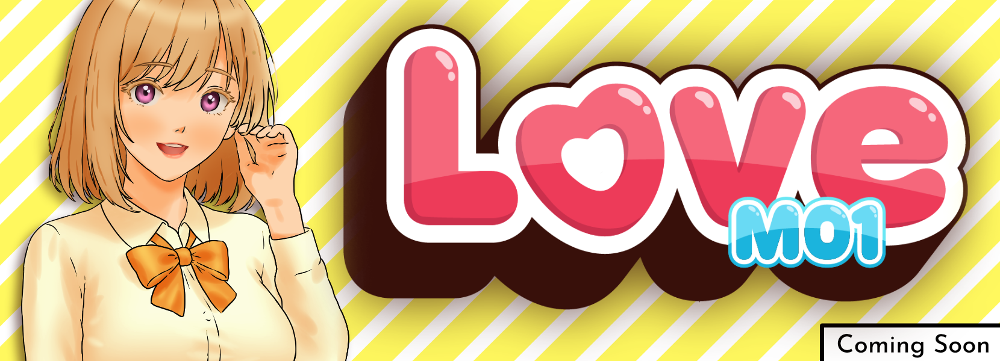
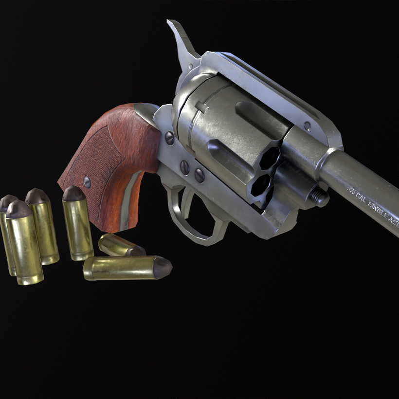
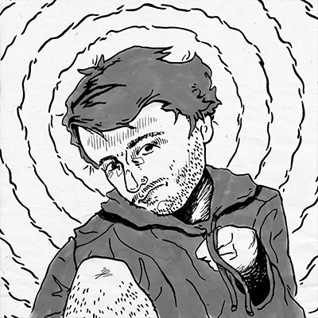
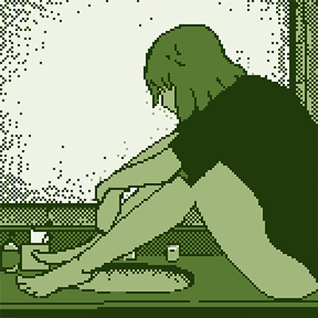
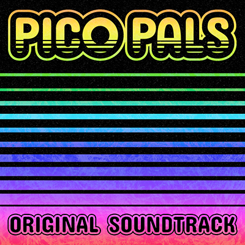
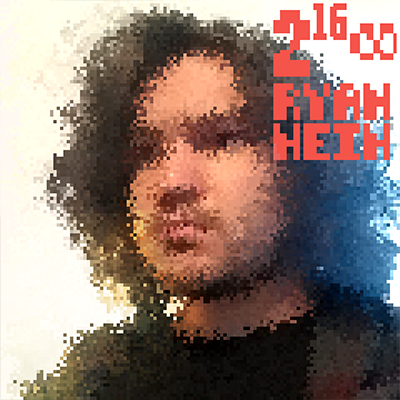
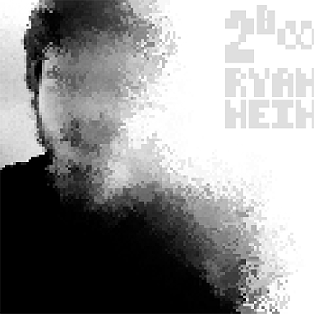
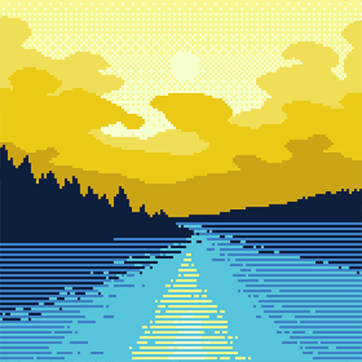
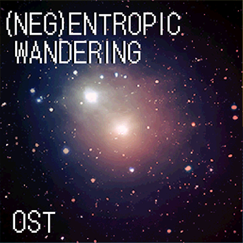

Philosophy
Long‑form video essays exploring aesthetics, semiotics, and phenomenology, building systems around how meaning and experience are structured. These projects combine research, writing, motion graphics, and video editing to communicate complex ideas with clarity. The theoretical work developed here directly informs my design practice, shaping how I approach visual structure, interaction, and decision‑making.
Graphic Design
Illustration‑focused graphic design with an emphasis on strong vector form, intentional color, and clear visual hierarchy. This work includes identity and packaging projects that communicate information cleanly and effectively, balancing aesthetic clarity with practical marketing needs.
Game Design
Solo‑developed game projects built across programming, art, music, writing, and UI. My work focuses on intrinsic motivation, sincere emotional tone, and strong visual identity, supported by a systems‑oriented approach to design and development. Each project reflects a unified creative vision, combining technical implementation with illustration, audio, and theory‑driven decision‑making.

3D Modeling
Hard‑surface 3D modeling focused on props and instruments, ranging from realistic materials to hand‑painted textures. These projects emphasize clean topology, clear form, and strong visual identity, with attention to detail in both modeling and texturing.

Music
Music composition focused on odd time signatures, intricate rhythm, and simple, memorable melody. Most projects are MIDI‑based game soundtracks, with additional personal pieces ranging from retro‑inspired to modern production. Each soundtrack has a distinct musical identity, using rhythm, texture, and structure to match the tone and atmosphere of the game. Some works explore more experimental approaches.






